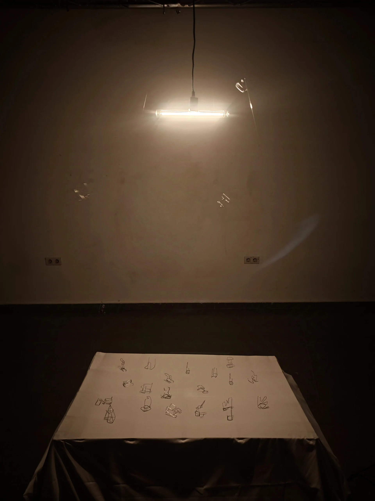
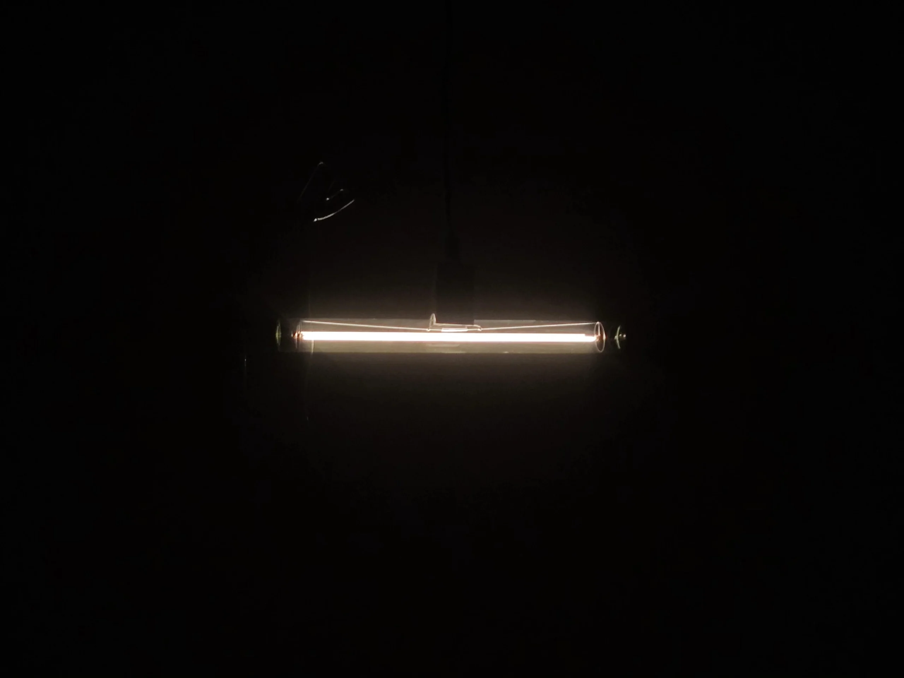
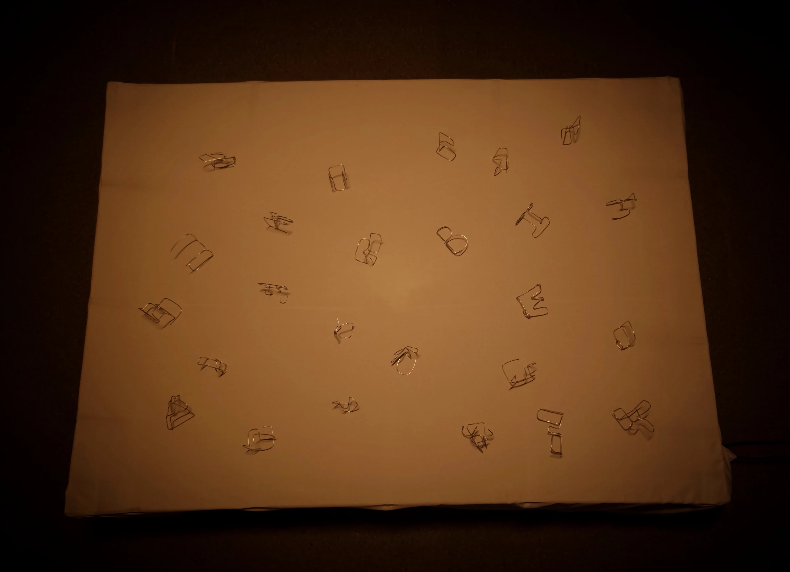

COLUMPIO DE SOMBRAS
- TECHNIQUES:
- - Arduino UNO, motores de vibración, ESP32, relé 250V y altavoz
- - LED de filamento linestra, hilo de pescar y servomotores
- - Letras de alambre, tela blanca y sistema de sombras en movimiento
- - Team project: Xin Lin / Geovannys Rafael Balbera Pertuz
- - Valencia, España
Columpio de Sombras es una instalación interactiva que combina luz, movimiento, texto y sombra para explorar el flujo del tiempo, las huellas del crecimiento y la relación entre el ser humano y el espacio que habita.
El núcleo de la obra es un columpio cuyo asiento ha sido sustituido por un tubo LED alargado que emite luz de abajo hacia arriba. Cuando el columpio entra en movimiento, la luz proyecta sombras de palabras sobre una superficie de tela blanca, generando un poema visual cambiante sobre tiempo y memoria.
Debajo de la tela se instalan vibradores y altavoces que emiten un ritmo de “tic-tac” y provocan un leve desplazamiento de las letras de alambre. Así, la obra integra dimensión visual, auditiva y táctil en una misma experiencia.



